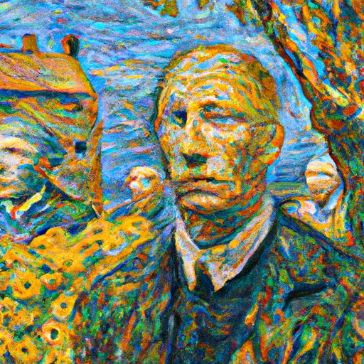

Why AI will never replace humans
Artificial Intelligence (AI) has been a hot topic in recent years, with advances in the field allowing machines to do more and more complicated tasks. While it is true that AI is becoming increasingly sophisticated, it will never be able to replace humans. Humans are still the most intelligent and creative creatures on the planet, and no amount of programming can change that.
AI is best used to supplement human intelligence and creativity by automating routine tasks and helping humans make more informed decisions. For example, AI can be used to analyze data and identify patterns that could not be seen by the human eye. AI can also be used to optimize processes and create more efficient workflows.
However, AI will never be able to replace humans for certain tasks. Humans are still the best at creative thinking and problem-solving, and no amount of programming can replicate the unique thought processes of the human mind. AI can be used to automate routine tasks, but it cannot be expected to replicate the unique insights of a human being.
Ultimately, AI will never replace humans because humans are simply too complex and unpredictable. AI can be used to automate routine tasks and supplement human intelligence, but it will never be able to replace the creativity and intelligence of the human mind.